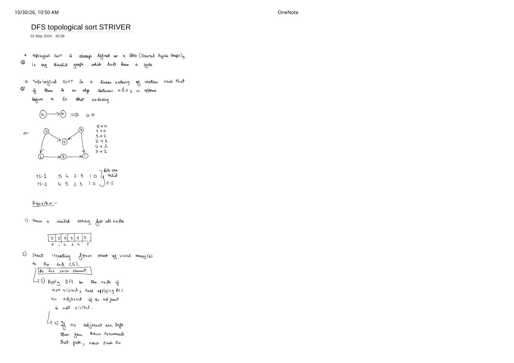

Part 1: Topological Sort via DFS & Post-Order Finish Stack
Expanded from handwritten competitive coding study notes (01_DFS_topological_sort_STRIVER.pdf, Pages 1–2) · View original handwritten pages
1. Definition & Why Only Directed Acyclic Graphs (DAGs) Qualify
Topological Ordering
Topological sort is defined exclusively on a DAG (Directed Acyclic Graph). It is a linear ordering of all vertices $V$ such that for every directed edge $u \to v \in E$, vertex $u$ appears before vertex $v$ in the sequence.
Why do non-DAGs fail immediately?
- Undirected graphs: An undirected edge $\{u, v\}$ models both $u \to v$ and $v \to u$, demanding $u$ before $v$ and $v$ before $u$ simultaneously—impossible!
- Directed graphs with a cycle: In $1 \to 2 \to 3 \to 1$, $1$ must precede $2$, $2$ must precede $3$, and $3$ must precede $1$, leaving no valid first element among $\{1, 2, 3\}$.
Consider the 6-vertex DAG from page 1 of the handwritten notes with edge list:
5 → 0, 4 → 0, 5 → 2, 2 → 3, 4 → 1, 3 → 1
Valid Topological Sort 1 (
TS-1): 5 4 2 3 1 0Valid Topological Sort 2 (
TS-2): 4 5 2 3 1 0 (and also 4 5 0 2 3 1, etc. — all 6 directed edges point strictly left-to-right!)
2. The 4-Step DFS Post-Order Stack Algorithm
How does Depth-First Search capture dependency order without counting incoming edges? The secret lies in Step 4—pushing onto a LIFO stack only when backtracking out of a vertex:
- Allocate a
visitedarray of size $V$ initialized to[0, 0, 0, 0, 0, 0]and an emptystack. - Iterate through every vertex $i = 0 \to V - 1$ (handling all disconnected or multi-source components).
- If
visited[i] == 0, invokedfs(i): markvisited[node] = 1and recursively calldfs(adj)for every unvisited outgoing neighboradj. - Post-Order Push: Once no unvisited outgoing neighbors remain (every path reachable from
nodehas completely finished), pushnodeontostack. Finally, popstackuntil empty to obtain the topological order!
Why Reverse Finish Time Is Always Topologically Valid
Take any directed edge $u \to v$ in a DAG. When dfs(u) inspects $v$:
- Case 1 ($v$ is unvisited):
dfs(u)callsdfs(v), which must finish and push $v$ onto the stack beforedfs(u)finishes and pushes $u$. - Case 2 ($v$ is already visited): Because the graph has no cycle, $v$ cannot be an active ancestor of $u$ on the call stack (that would mean a path $v \leadsto u$ plus edge $u \to v$ forms a cycle!). Thus
dfs(v)already finished earlier and $v$ is already sitting in the stack!
In every case on a DAG, $v$ is pushed into the stack before $u$, so $u$ sits above $v$ and pops before $v$!
3. Step-by-Step Dry Run on the Handwritten DAG
First, look at the single chain 5 → 2 → 3 → 1 traced on page 2 of the notes: calling DFS(5) → DFS(2) → DFS(3) → DFS(1) reaches sink 1 with zero outgoing neighbors, so 1 pushes first, followed on backtrack by 3, then 2, then 5:
5) finishes last and lands at the very top of the stack.Now let us run the complete outer loop for (int i = 0; i < 6; ++i) from index $0$ to $5$ on the full 6-node graph:
| Outer $i$ | DFS Call Trace | visited[0..5] After Step |
Stack (Bottom $\to$ Top) |
|---|---|---|---|
i = 0 |
dfs(0): no outgoing edges → push 0 |
[1, 0, 0, 0, 0, 0] |
[0] |
i = 1 |
dfs(1): no outgoing edges → push 1 |
[1, 1, 0, 0, 0, 0] |
[0, 1] |
i = 2 |
dfs(2) → dfs(3) (1 already visited → push 3) → push 2 |
[1, 1, 1, 1, 0, 0] |
[0, 1, 3, 2] |
i = 3 |
Already visited — skip | [1, 1, 1, 1, 0, 0] |
[0, 1, 3, 2] |
i = 4 |
dfs(4): neighbors 0, 1 both visited → push 4 |
[1, 1, 1, 1, 1, 0] |
[0, 1, 3, 2, 4] |
i = 5 |
dfs(5): neighbors 0, 2 both visited → push 5 |
[1, 1, 1, 1, 1, 1] |
[0, 1, 3, 2, 4, 5] |
Popping the final stack [0, 1, 3, 2, 4, 5] from top to bottom outputs 5 4 2 3 1 0—the exact TS-1 sequence written on page 1 of the notes!
4. Implementation & Complexity
Warning When Cycles Might Exist in Input!
The basic 1-array visited[] DFS topological sort assumes the input graph is guaranteed to be a DAG. If the problem does not guarantee acyclicity (e.g., LeetCode 210: Course Schedule II), either add a recursion-stack pathVis[] check (see Directed Graph Cycle Detection) or use Kahn's BFS Algorithm, which detects cycles automatically!
// Striver's Topological Sort via DFS Post-Order Stack — C++ (Assumes input is a DAG)
class Solution {
void dfs(int node, const vector<vector<int>>& adj, vector<int>& vis, stack<int>& st) {
vis[node] = 1;
for (int nbr : adj[node]) {
if (!vis[nbr]) {
dfs(nbr, adj, vis, st);
}
}
// Step 4: All outgoing paths from `node` are exhausted — push onto stack!
st.push(node);
}
public:
vector<int> topoSort(int V, const vector<vector<int>>& adj) {
vector<int> vis(V, 0);
stack<int> st;
for (int i = 0; i < V; ++i) {
if (!vis[i]) {
dfs(i, adj, vis, st);
}
}
vector<int> ans;
ans.reserve(V);
while (!st.empty()) {
ans.push_back(st.top());
st.pop();
}
return ans;
}
};# Topological Sort via DFS + Cycle-Safe 3-Color State (Works even if cycles exist!)
class Solution:
def findOrder(self, V: int, adj: List[List[int]]) -> List[int]:
# 0 = unvisited, 1 = visiting (on active DFS path), 2 = finished
state = [0] * V
post_order = []
def dfs(u: int) -> bool:
state[u] = 1
for v in adj[u]:
if state[v] == 1:
return False # Back-edge to active ancestor -> cycle!
if state[v] == 0 and not dfs(v):
return False
state[u] = 2
post_order.append(u)
return True
for i in range(V):
if state[i] == 0 and not dfs(i):
return [] # Cycle detected: no topological sort exists
return post_order[::-1] # Reverse finish order == popping LIFO stack- Time Complexity: $\mathcal{O}(V + E)$ — each vertex enters
dfs()once and each directed edge $u \to v$ is inspected once. - Auxiliary Space: $\mathcal{O}(V)$ for
vis[], the explicitstack(orpost_orderlist), and worst-case $\mathcal{O}(V)$ recursion depth.
From the Handwritten Notes
Expand the original handwritten pages below to inspect the exact derivations, dry runs, and annotations:
View original note — Striver DFS Topological Sort: DAG Definition, 6-Node Example & 4-Step Algorithm (Page 1)


TS-1 & TS-2, and the 4-step visited[] + stack algorithm.